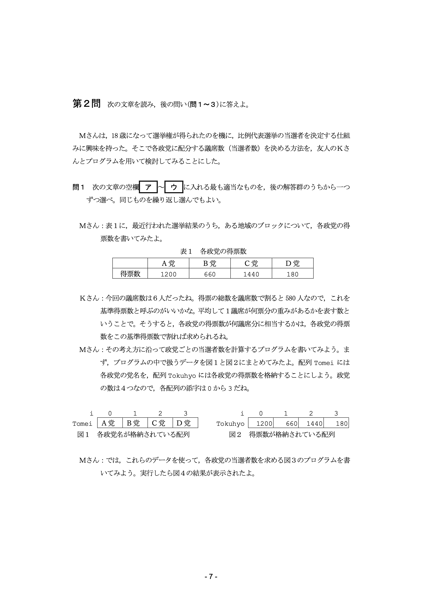
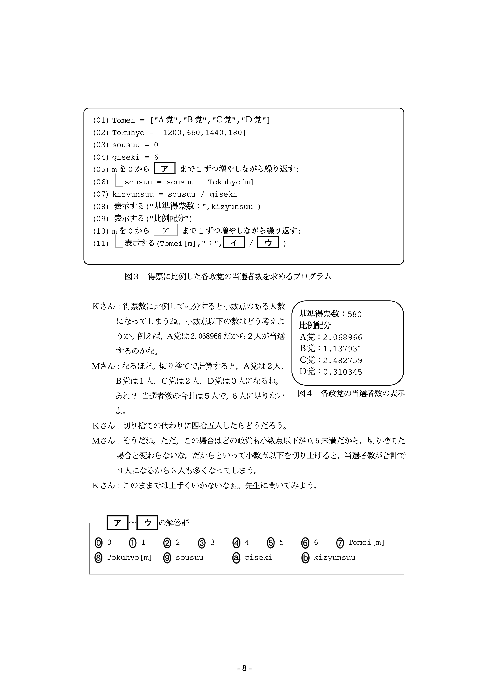

大学入試とAI#
「東ロボくん - Wikipedia」については別の機会に・・・
DNCL#
%%ai_ask
DNCLについて
DNCLとは、Do Not Call Listの略で、電話勧誘に対する希望しない電話を受け取らないようにするためのリストです。このリストに登録された人々は、法的に電話勧誘業者からの電話を受け取ることができません。DNCLは、個人情報保護の観点から、多くの国で導入されています。
%%ai_continue
日本の大学入試で使われる標準言語の方
日本の大学入試で使われる標準言語は、一般的には日本語です。ただし、コンピューターサイエンスや工学系の学部では、プログラミング言語としてC言語やJavaが使われることがあります。また、英語の試験もあるため、英語力が求められる場合もあります。しかし、大学入試においては、基本的には日本語での筆記試験が中心となります。
R7: 情報 サンプル問題 第２問#
問1#


次のChatGPTとの応答例を参考に上の問題に解答せよ#
%%ai_ask
日本の比例代表選挙の基準得票数について
申し訳ありませんが、私は日本の比例代表選挙の基準得票数についての専門知識を持っていません。他に何かお力になれることがあれば、お知らせください。
%%ai_continue
pythonでプログラムします。今回は組み込み関数だけ使います。
組み込み関数を使用してPythonプログラムを作成することは非常に一般的です。組み込み関数には、数学関数（例：abs、round）、文字列関数（例：len、str）、リスト関数（例：max、min）などがあります。これらの関数は、Pythonの標準ライブラリに含まれており、インストールする必要はありません。組み込み関数を使用することで、プログラムをより簡潔に、効率的に書くことができます。
%%ai_continue
配列Tomeiに "A党", "B党", "C党", "D党" を格納します。Tomeiは不変です。
以下は、Pythonで配列Tomeiに “A党”, “B党”, “C党”, “D党” を格納する方法です。Tomeiはタプル（tuple）として定義され、不変（immutable）です。
Tomei = ("A党", "B党", "C党", "D党")
このように、タプルを使用することで、不変な配列を作成することができます。タプルは、リストと同様に複数の要素を格納することができますが、一度定義された後に変更することはできません。
%%ai_continue
ちなみにpythonにおける不変な配列について
Pythonにおいて、不変な配列は「タプル（tuple）」と呼ばれます。タプルは、リストと同様に複数の要素を格納することができますが、一度定義された後に変更することはできません。タプルは、丸括弧（()）で囲まれた要素のカンマ区切りのリストとして定義されます。
以下は、タプルの例です。
my_tuple = (1, 2, 3, 4, 5)
タプルは、リストと同様にインデックスを使用して要素にアクセスすることができます。また、タプルはリストと同様にスライスを使用して部分的な要素を取得することができます。
タプルは、リストと比較してメモリ使用量が少なく、処理速度が速いという利点があります。ただし、一度定義された後に変更することができないため、要素の追加や削除が必要な場合は、リストを使用する必要があります。
%%ai_continue
in english
In Python, immutable arrays are called “tuples”. Tuples can store multiple elements like lists, but once defined, they cannot be changed. Tuples are defined as a comma-separated list of elements enclosed in parentheses “()”.
Here is an example of a tuple:
my_tuple = (1, 2, 3, 4, 5)
Like lists, tuples can be accessed using indexes and can use slices to retrieve partial elements.
Tuples have the advantage of using less memory and being faster than lists. However, since they cannot be changed once defined, if you need to add or remove elements, you will need to use a list.
%%ai_continue
Tomeiの最初の要素、最後の要素の取り出し方を説明してください。また、任意の場所iの要素の取り出し方も教えてください。
Tomeiの最初の要素を取得するには、インデックス0を使用します。最後の要素を取得するには、インデックス-1を使用します。任意の場所iの要素を取得するには、インデックスi-1を使用します。
以下は、PythonでTomeiの最初の要素、最後の要素、および任意の場所iの要素を取得する方法の例です。
Tomei = ("A党", "B党", "C党", "D党")
# 最初の要素を取得する
first_party = Tomei[0]
print(first_party) # 出力結果: A党
# 最後の要素を取得する
last_party = Tomei[-1]
print(last_party) # 出力結果: D党
# 任意の場所iの要素を取得する
i = 2
ith_party = Tomei[i-1]
print(ith_party) # 出力結果: C党
このように、タプルの要素にはインデックスを使用してアクセスすることができます。
%%ai_continue
次に、配列Tokuhyoに 1200, 660, 1440, 180 を格納します。Tokuhyoも不変です。
以下は、Pythonで配列Tokuhyoに 1200, 660, 1440, 180 を格納する方法です。Tokuhyoはタプル（tuple）として定義され、不変（immutable）です。
Tokuhyo = (1200, 660, 1440, 180)
このように、タプルを使用することで、不変な配列を作成することができます。タプルは、リストと同様に複数の要素を格納することができますが、一度定義された後に変更することはできません。
%%ai_continue
変数sousuuを0で初期化し、Tokuhyoの総計を求めてsousuuに格納するプログラムを書いてください。
以下は、Pythonで変数sousuuを0で初期化し、Tokuhyoの総計を求めてsousuuに格納するプログラムの例です。
Tokuhyo = (1200, 660, 1440, 180)
sousuu = 0
for i in Tokuhyo:
sousuu += i
print(sousuu) # 出力結果: 3480
このプログラムでは、Tokuhyoの各要素をループで処理し、sousuuに加算していきます。最終的に、sousuuにはTokuhyoの総計が格納されます。
%%ai_continue
変数sousuuを0で初期化し、Tokuhyoの総計を求めてsousuuに格納するプログラムを書いてください。
その際、for文を使ってループ変数を添字としてTokuhyoの各要素をアクセスしてください。
以下は、Pythonで変数sousuuを0で初期化し、Tokuhyoの総計を求めてsousuuに格納するプログラムの例です。このプログラムでは、for文を使用してループ変数を添字としてTokuhyoの各要素をアクセスしています。
Tokuhyo = (1200, 660, 1440, 180)
sousuu = 0
for i in range(len(Tokuhyo)):
sousuu += Tokuhyo[i]
print(sousuu) # 出力結果: 3480
このプログラムでは、range(len(Tokuhyo))を使用して、Tokuhyoのインデックスをループ変数として取得しています。ループ内で、Tokuhyo[i]を使用して、各要素にアクセスし、sousuuに加算していきます。最終的に、sousuuにはTokuhyoの総計が格納されます。
%%ai_continue
参考までに、組み込み関数を使うと簡略化できますか？
はい、組み込み関数を使用することで、より簡潔にプログラムを書くことができます。例えば、sum()関数を使用することで、配列の総計を簡単に計算することができます。
以下は、Pythonでsum()関数を使用して、Tokuhyoの総計を求めるプログラムの例です。
Tokuhyo = (1200, 660, 1440, 180)
sousuu = sum(Tokuhyo)
print(sousuu) # 出力結果: 3480
このように、sum()関数を使用することで、ループを使用する必要がなく、より簡潔なプログラムを書くことができます。
%%ai_continue
次に、変数gisekiを導入し6で初期化してください。gisekiは定数です。変数kizyunsuuにsousuuをgisekiで割った値を格納してください。
以下は、Pythonで変数gisekiを導入し6で初期化し、kizyunsuuにsousuuをgisekiで割った値を格納するプログラムの例です。
Tokuhyo = (1200, 660, 1440, 180)
sousuu = sum(Tokuhyo)
giseki = 6
kizyunsuu = sousuu / giseki
print(kizyunsuu) # 出力結果: 580.0
このプログラムでは、gisekiを6で初期化し、sousuuをgisekiで割った値をkizyunsuuに格納しています。最終的に、kizyunsuuにはsousuuをgisekiで割った値が格納されます。
%%ai_continue
最後に、Tokuhyoの各要素をkizyunsuuで割って、Tomeiの値をラベルにして表示してください。
以下は、PythonでTokuhyoの各要素をkizyunsuuで割り、Tomeiの値をラベルにして表示するプログラムの例です。
Tokuhyo = (1200, 660, 1440, 180)
sousuu = sum(Tokuhyo)
giseki = 6
kizyunsuu = sousuu / giseki
Tomei = ("A党", "B党", "C党", "D党")
for i in range(len(Tokuhyo)):
ratio = Tokuhyo[i] / kizyunsuu
label = Tomei[i]
print(f"{label}: {ratio:.2f}")
# 出力結果:
# A党: 2.07
# B党: 1.14
# C党: 2.48
# D党: 0.31
このプログラムでは、Tokuhyoの各要素をkizyunsuuで割り、Tomeiの値をラベルにして表示しています。ループ内で、Tokuhyo[i] / kizyunsuuを使用して、各要素をkizyunsuuで割った値を計算し、Tomei[i]を使用して、各要素に対応するラベルを取得しています。最終的に、print()関数を使用して、ラベルと割合を表示しています。
Tokuhyo = (1200, 660, 1440, 180)
sousuu = sum(Tokuhyo)
giseki = 6
kizyunsuu = sousuu / giseki
Tomei = ("A党", "B党", "C党", "D党")
for i in range(len(Tokuhyo)):
ratio = Tokuhyo[i] / kizyunsuu
label = Tomei[i]
print(f"{label}: {ratio:.2f}")
A党: 2.07
B党: 1.14
C党: 2.48
D党: 0.31
回答#
次のセルの “ア”, “イ”, “ウ” の値が "_" になっています。
ダブルクオーテーション " で囲まれたアンダースコア _ を回答 (半角英数字一文字) に書き換えて、
ツールバーの “Validate” を押してください。
ブルートフォースアタックができないように、応答が出るまで時間が掛かります。
すべて正答であれば “Success! Your notebook passes all the tests.” と表示されます。
your_answer = {
"ア": "_",
"イ": "_",
"ウ": "_",
}
%%ai_ask
ブルートフォースアタックとは
ブルートフォースアタックとは、パスワードや暗号化されたデータを解読するために、すべての可能性のある組み合わせを試行する攻撃手法です。攻撃者は、自動化されたツールを使用して、パスワードや暗号化されたデータを繰り返し試行し、正しいものを見つけることを目的としています。この攻撃手法は、強力なパスワードや暗号化が使用されていない場合に特に有効です。
以下、採点用のセルにつき編集できない
import hashlib
validate = {}
validate["ア"] = hashlib.md5(your_answer["ア"].encode('utf-8')).hexdigest()
validate["イ"] = hashlib.md5(your_answer["イ"].encode('utf-8')).hexdigest()
validate["ウ"] = hashlib.md5(your_answer["ウ"].encode('utf-8')).hexdigest()
assert validate["ア"] == "eccbc87e4b5ce2fe28308fd9f2a7baf3"
assert validate["イ"] == "c9f0f895fb98ab9159f51fd0297e236d"
assert validate["ウ"] == "92eb5ffee6ae2fec3ad71c777531578f"